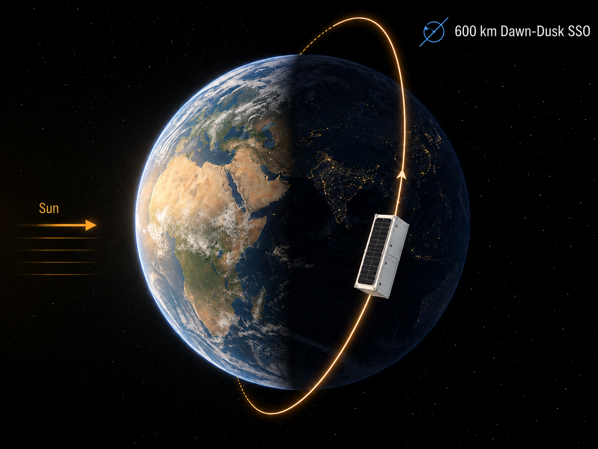
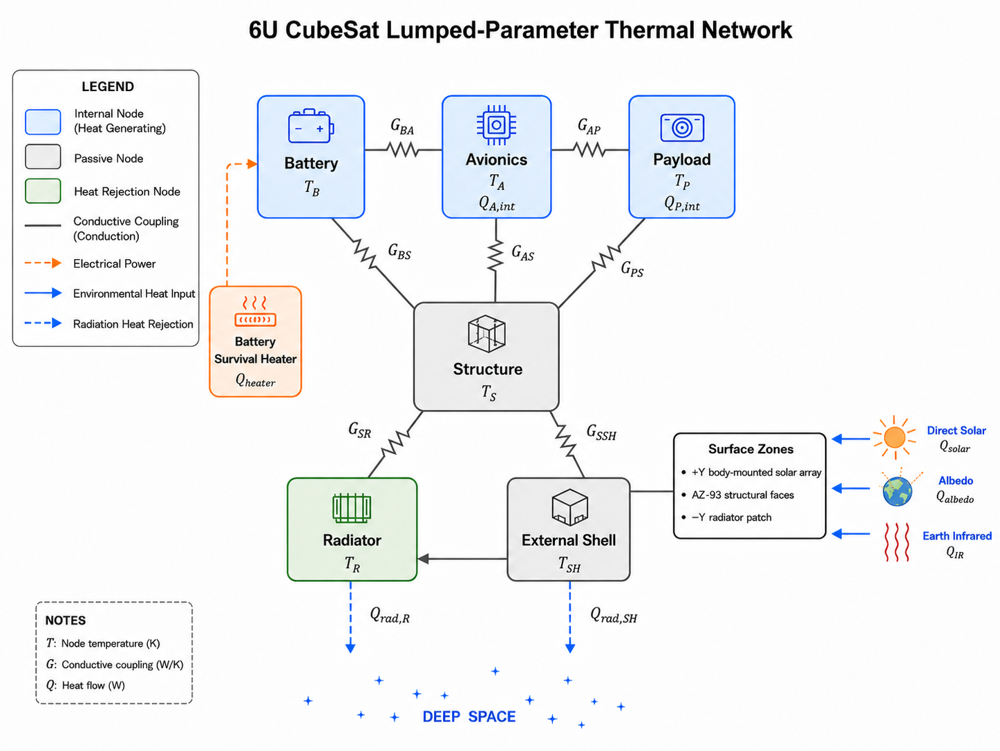
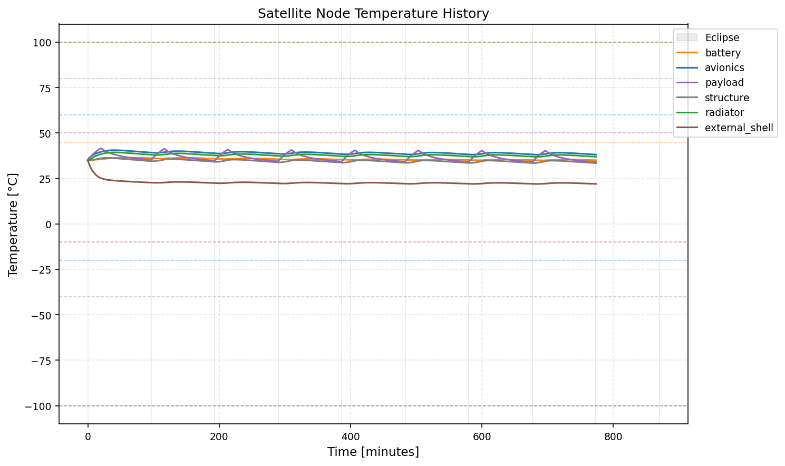
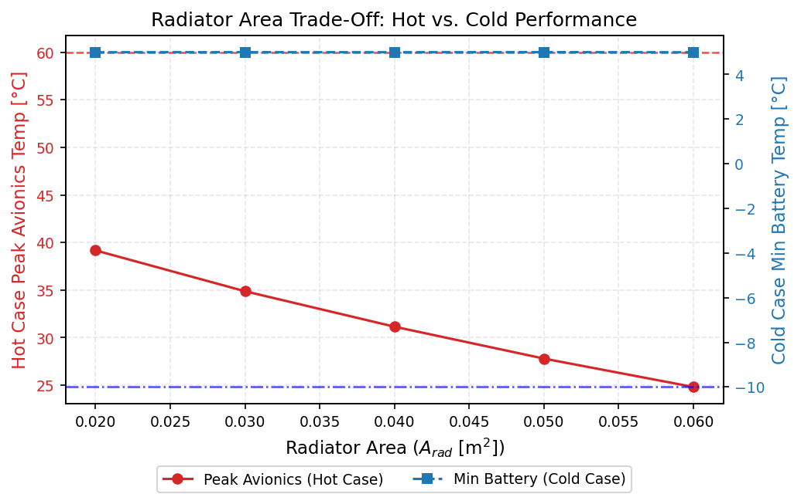

Project
Passive Thermal Design of a 6U Small Satellite
A reproducible Python thermal-analysis workflow for passive thermal design, radiator sizing, and bounding-case verification of a 6U small satellite in a 600 km dawn-dusk Sun-Synchronous Orbit.
Project Summary
This project studies a passive thermal redesign for a 6U small satellite operating in a circular 600 km dawn-dusk SSO. The analysis combines orbital heat-load estimation, thermal surface zoning, a 6-node lumped-parameter thermal network, scenario simulation, and radiator sizing trade studies. The workflow is implemented as a transparent Python package with scenario files, material/property tables, generated figures, and verification tests.
Engineering status: preliminary design verification concept, not flight-qualified. The model requires future correlation with detailed geometric thermal models and TVAC / thermal-balance test data.
Motivation / Background
Small satellites in high-beta dawn-dusk orbits can experience long periods of continuous sunlight, creating a difficult hot-case design problem. The goal was to evaluate whether a passive surface-zoning strategy and anti-Sun radiator placement could keep avionics, battery, payload, structure, radiator, and external shell temperatures within operational limits without complex active thermal hardware.
Key Results
- Bounding hot case at 74 deg beta converged after 8 simulated orbits and achieved a robust pass across all tracked thermal nodes.
- Hot-case avionics temperature remained between 38.1 and 39.2 deg C, leaving about 20.8 deg C upper margin to the assumed limit.
- Battery stayed between 35.0 and 35.4 deg C in the hot case, while the heater duty cycle and heater energy were both zero.
- Radiator area trade study quantified the balance between lower hot-case avionics peak temperature and increased cold-case heater demand.
Selected Figures




My Contribution
I built the end-to-end Python analysis workflow, including scenario parsing, material and component data tables, environmental heat-load calculations, the lumped thermal network, solver execution scripts, trade-study automation, visualization, and verification tests. I also documented assumptions and generated the project report assets for transparent review and future refinement.